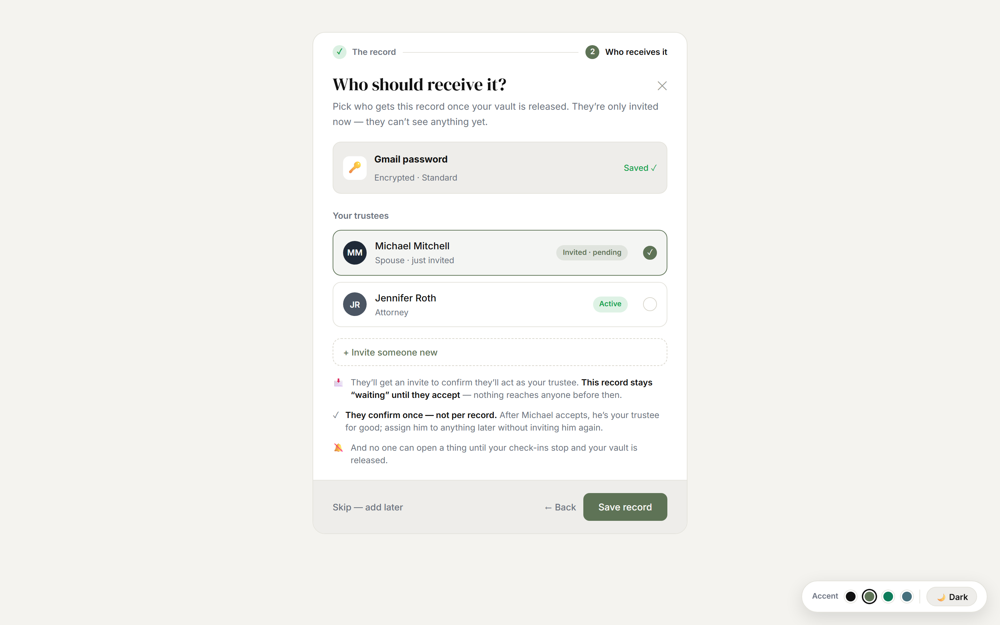
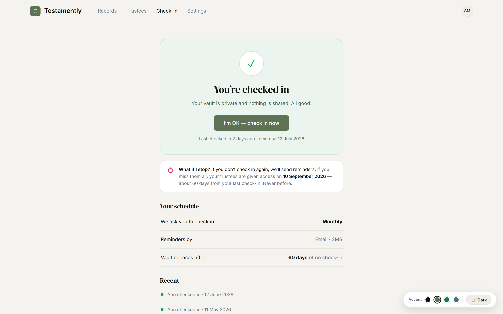

1
Add what matters
Store the codes, locations and messages your loved ones will need — a safe combination, a phone PIN, where the will is, a letter. Encrypted the moment you type. Two fields and you’re done.

2
Choose who receives it
Assign a trustee to each record. They’re invited and verified — but see nothing until the day comes. Confirm once; assign them to anything later.

3
We check in with you
Every so often we ask you to confirm you’re OK. One tap and everything stays private. We even tell you exactly what would happen — and when — if you ever stopped.

4
Released, only if needed
If your check-ins ever stop and the waiting period passes, your trustees are given exactly what you left them — with your notes to guide them. Never a moment before.